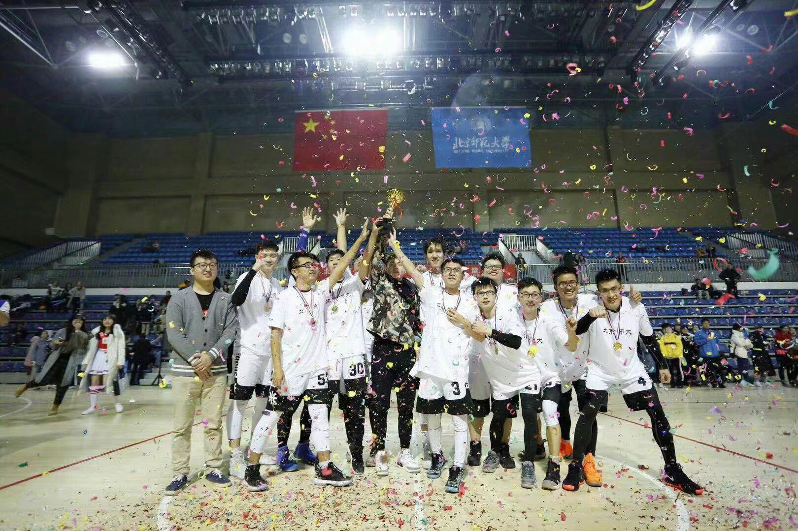
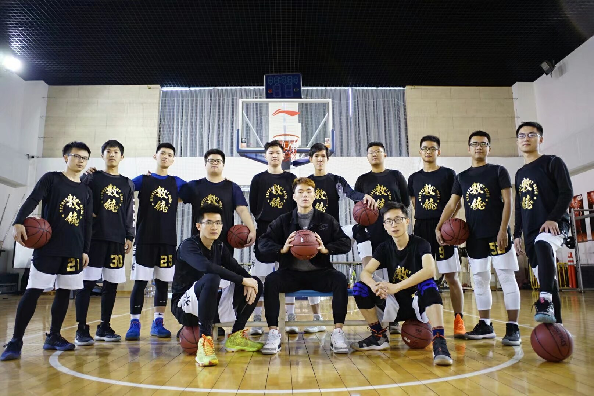
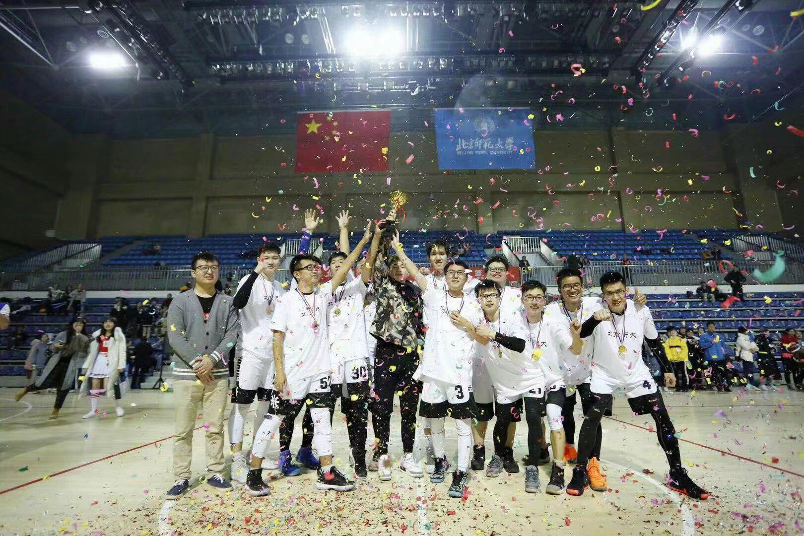
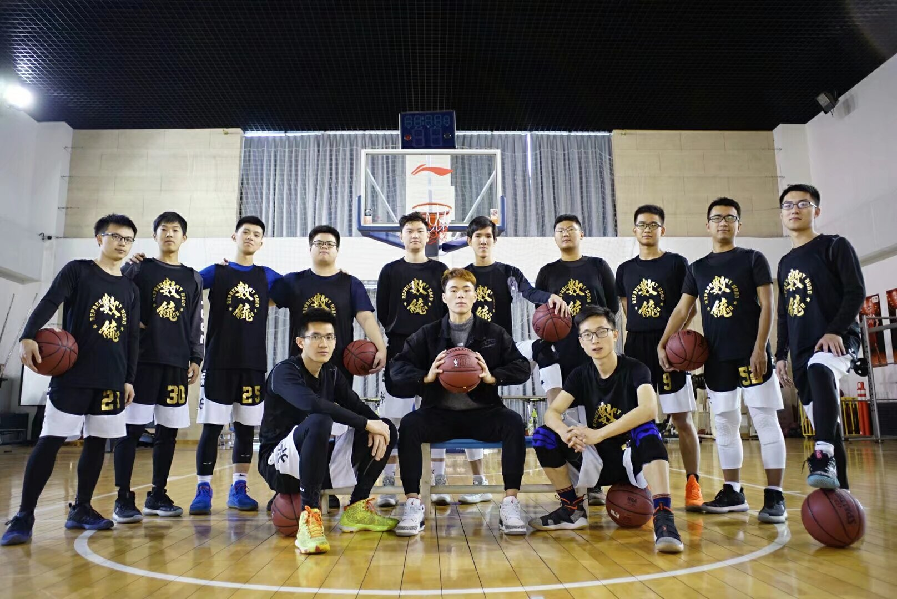

I am currently Ph.D student of Computer Science at North Carolina State University, where I am fortunately advised by Prof. Jianqing Liu. Prior to that, I got my M.S. and B.S. degree in Computer Science and Technology at Nanjing Tech University, advised by Xili Wan.
💗 Research Interests
- Quantum Communications and Networks
- Graph Neural Networks
- AI for Science
🔥 News
- 🎉 2024.12: One paper is accepted by Progress in Quantum Electronics: The road to quantum internet: Progress in quantum network testbeds and major demonstrations.
- 📖 2024.12: New preprint: Post-hoc Interpretability Illumination for Scientific Interaction Discovery. https://arxiv.org/abs/2412.16252
- 🎉 2024.07: One paper is accepted by 2024 IEEE Computer Society Annual Symposium on VLSI (ISVLSI): Low-power and Computing-free Privacy Design for IoT Systems.
- 📖 2024.04: New preprint: Distributing Arbitrary Quantum Cluster States by Graph Transformation. https://arxiv.org/abs/2404.05537
📝 Publications

The road to quantum internet: Progress in quantum network testbeds and major demonstrations
Jianqing Liu, Thinh Le, Tingxiang Ji, Ruozhou Yu, Demitry Farfurnik, Greg Bryd, Daniel Lidar
Progress in Quantum Electronics (PQE), 2024

Distributing Arbitrary Quantum Cluster States by Graph Transformation.
Tingxiang Ji, Jianqing Liu, Zheshen Zhang
Preprint, 2024
Low-power and Computing-free Privacy Design for IoT Systems
Hui Sun, Kyle Mooney, Mario Renteria-Pinon, Tingxiang Ji, Hritom Das, Na Gong, Jianqing Liu
IEEE Computer Society Annual Symposium on VLSI (ISVLSI), 2024
Towards optimal application offloading in heterogeneous edge-cloud computing
Tingxiang Ji, Xili Wan, Xinjie Guan, Aichun Zhu, Feng Ye
IEEE Transactions on Computers, 2023
Optimal DNN Inference Delay Minimization for Chain-Structured Roadside Edge Networks
Xili Wan, Tingxiang Ji, Xinjie Guan, Aichun Zhu, Feng Ye
IEEE Transactions on Vehicular Technology, 2023
PGTCN: A novel password-guessing model based on temporal convolution network
Yaping Wu, Xili Wan, Xinjie Guan, Tingxiang Ji, Feng Ye
Journal of Network and Computer Applications, 2023
Maximal Network Lifetime Scheduling Algorithms for Roadside Sensor Networks
Xili Wan, Tingxiang Ji, Xinjie Guan, Feng Ye, Yifeng Li
IEEE International Smart Cities Conference (ISC2), 2021

Optimal task assignment for integrated cloud and edge networks with tree topology
Xinjie Guan, Tingxiang Ji, Xili Wan, Yifeng Li, Feng Ye
IEEE Communications Letters, 2021

Deep temporal convolutional networks for short-term traffic flow forecasting
Wentian Zhao, Yanyun Gao, Tingxiang Ji, Xili Wan, Feng Ye, Guangwei Bai
IEEE Access, 2019
🎖 Honors and Awards
- 🏀 2018.12 Champion of Mingyue Cup Basketball Match of BNU (FMVP)
- 🏆 2017/2018/2019 First-class scholarship of Beijing Normal University
📖 Educations
 2023.06 - (now), PhD in Computer Science, North Carolina State University, Raleigh
2023.06 - (now), PhD in Computer Science, North Carolina State University, Raleigh- 2020.09 - 2023.06, MS in Mathematics, Academy of Mathematics and Systems Science, Beijing
 2016.09 - 2020.06, BS in Mathematics, Beijing Normal University, Beijing
2016.09 - 2020.06, BS in Mathematics, Beijing Normal University, Beijing
💬 Invited Talks
- 2024.10, Tutorial: “Adversarial Robustness in Graph Neural Networks: Recent Advances and New Frontier”, DSAA 2024, San Diego
- 2024.03, Robustify Transformers via Plug-and-Play Paradigm, MSU
- 2024.01, Research Lightning Talk on Large Language Models and AI Security, NCSU
💻 Internships
 2024.05 - 2024.08, Amazon GuardDuty, New York. Mentor: Ali Torkamani
2024.05 - 2024.08, Amazon GuardDuty, New York. Mentor: Ali Torkamani 2023.06 - 2023.09, Baidu, Inc., Beijing. Mentor: Xiaochi Wei
2023.06 - 2023.09, Baidu, Inc., Beijing. Mentor: Xiaochi Wei 2022.03 - 2022.09, Institute for AI Industry Research, Tsinghua University, Beijing. Mentor: Wenbing Huang
2022.03 - 2022.09, Institute for AI Industry Research, Tsinghua University, Beijing. Mentor: Wenbing Huang- 2021.08 - 2021.10, AiQuant, Beijing. Mentor: Ge Wang
🏀 Basketball is Life
 


